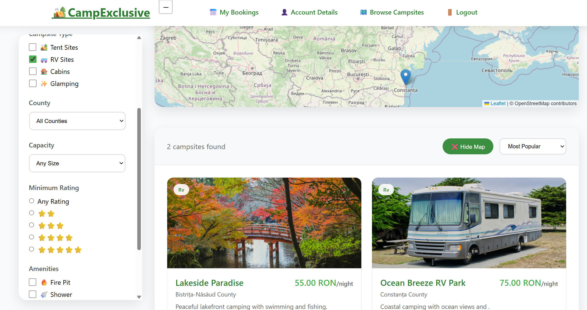
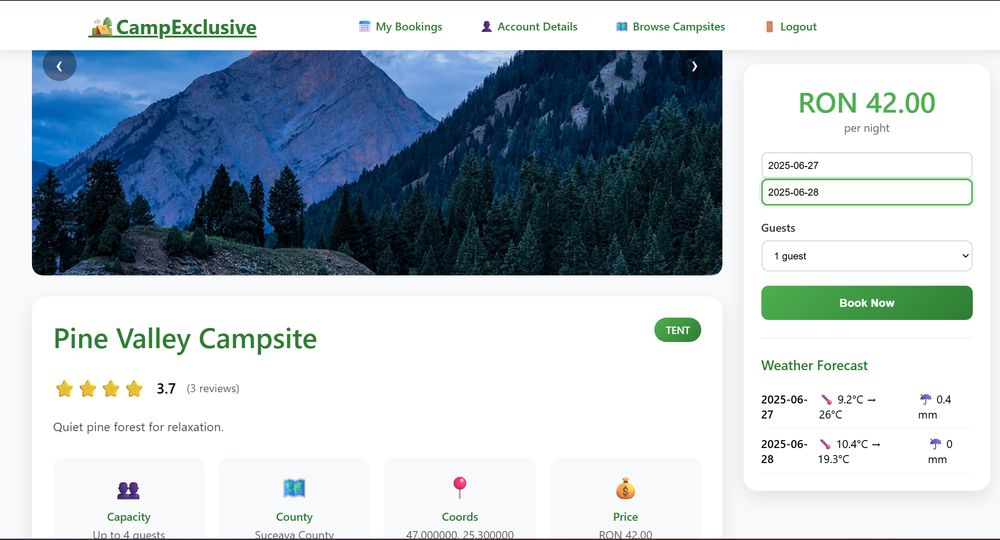
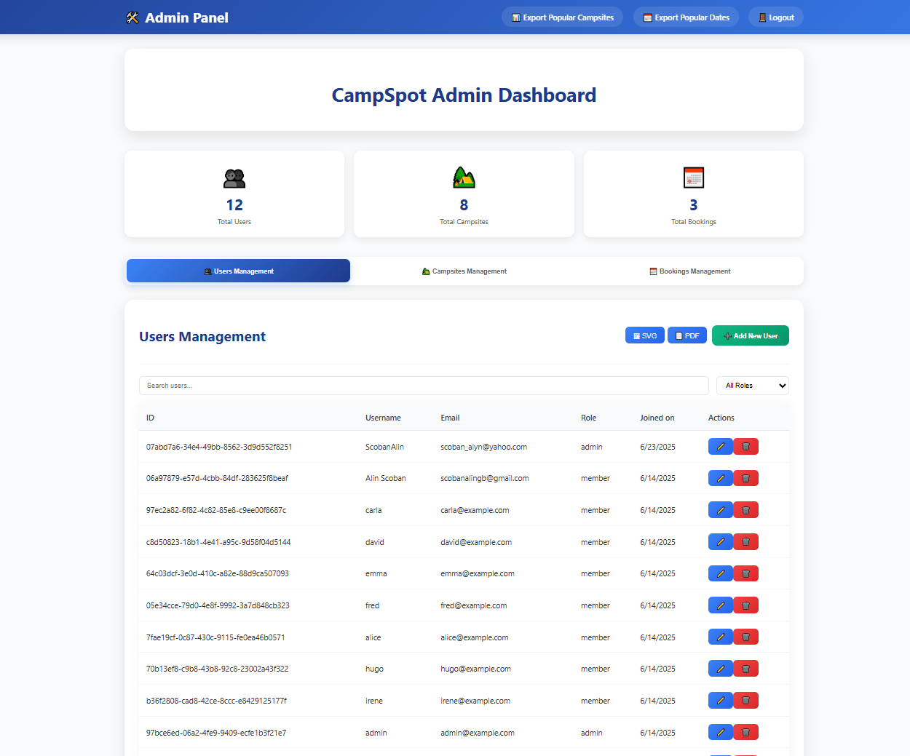
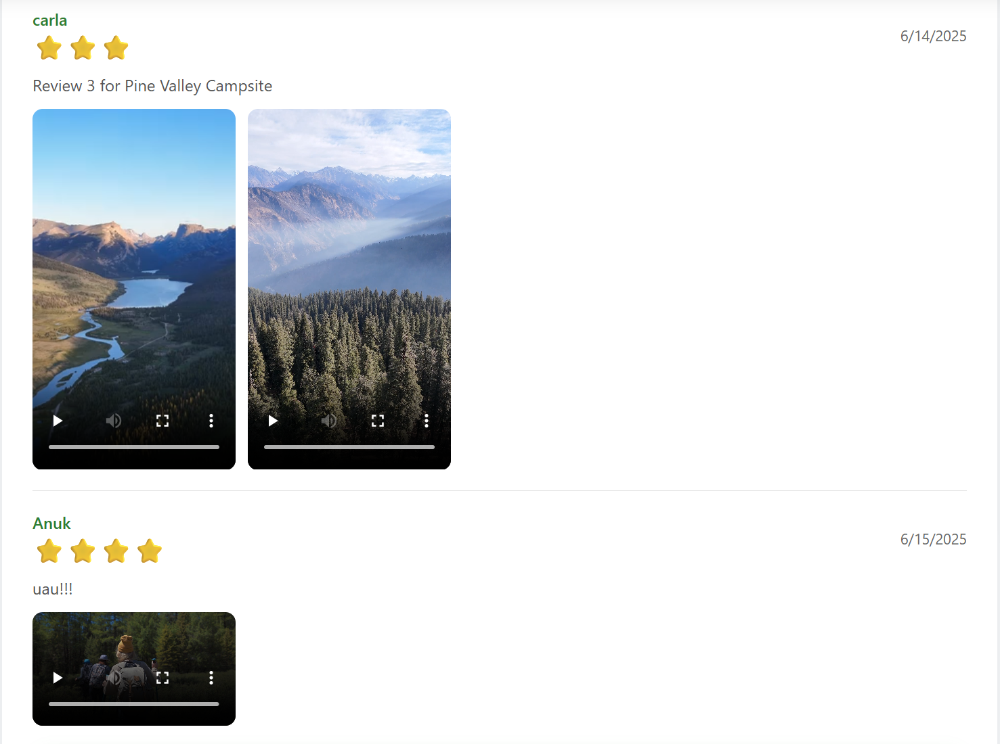

Camping Reservation Web Tool – CampSpot
Authors
- Stefan Ana-Maria Stefana
- Scoban Alin-Gabriel
1. Abstract
CampSpot is a modular web tool dedicated to booking and managing camping sites. The platform delivers a complete experience for both campsite administrators and members, integrating stay planning, multimedia review publishing and interactive exploration of locations on a map via OpenStreetMap. The system is built on a Node.js/PostgreSQL backend, features OAuth 2.0 authentication and authorisation, and includes analytic modules capable of generating textual, SVG and PDF reports on campsite occupancy and seasonal trends.
2. Introduction
2.1 Purpose
The purpose of the CampSpot application is to digitalise the campsite-booking process and facilitate interaction between campsite administrators and tourists. The platform enables quick reservations, real-time availability viewing, publishing of impressions (text, photo, audio, video) and interactive campsite exploration on a map. Administrators can manage campsite content, users and statistical reports in a unified, secure interface.
2.2 Document Conventions
This document follows ScholarlyHTML conventions. Major section headings are numbered, and important terms are emphasised in bold. Code samples, endpoints or CLI commands appear in monospace. Measurements are expressed in metres and decimal degrees where relevant.
2.3 Intended Audience & Reading Suggestions
This document targets:
- Developers & testers: see Sections 3.2 (System Architecture) and 4.3 (Software Interface).
- Campsite administrators: see Section 3.5 (User Documentation) and Section 5 (System Features).
- Project managers: see Sections 2.1 (Purpose) and 3.1 (Product Perspective).
- Tourists / End-users: see Section 4.1 (User Interface).
- Technical writers: see Section 2.2 (Document Conventions).
2.4 Product Scope
- Suitable for both public and private exclusivist campsites seeking online visibility and a modern booking system.
- Future integration with third-party services (payment processors).
3. General Description
3.1 Product Perspective
The CampSpot platform acts as a central hub linking tourists with campsite operators, providing a unified interface for bookings, reviews and resource management. The system adopts a client–server architecture, clearly separating concerns between the frontend (UI & presentation logic), the REST API and the backend (business logic, authentication, data management).
Key components:
- Frontend – HTML, CSS and JavaScript (Leaflet for mapping) with dedicated dashboards for users and admins.
- REST API – routes such as
/api/campsites,/api/bookings,/api/reviews,/api/users, etc. - Backend – Node.js
http,zodvalidation,openid-clientfor OAuth,busboyfor media uploads. - PostgreSQL database – stores campsites, bookings, users, media files and statistics.
- Report generator – produces inline SVG charts and PDF exports.
- Map layer – OpenStreetMap (via Leaflet) for rendering campsite locations.
3.2 System Architecture – C4 Diagrams
The C4 model offers a four-level view of the system. Diagrams (Context, Container, Component, Code) are generated with draw.io and reside in docs/diagrams/.
Context Diagram (C1)
Container Diagram (C2)
Component Diagram (C3)
3.3 User Classes & Characteristics
- Administrator – creates/edits campsite listings, manages users, moderates reviews, consults statistics.
- Member – books sites, adds multimedia reviews, can save favourite campsites.
3.4 Design & Implementation Constraints
- Hardware: server must support light media streaming (files < 5 MB).
- Interoperability: SVG/PDF exports for statistics.
- Security: OAuth 2.0, XSS sanitisation, prepared stmt for SQL Injection.
3.5 User Documentation
- OAuth sign-up flow: user authenticates via Google; a local profile is created.
- Booking a campsite: member selects date range and party size, then confirms.
- Adding a review: member uploads media & text to community reviews and chats
- Admin – manage campsite: UI for full power on the database.
- Admin – statistics: the Analytics page shows interactive SVG charts and an “Export PDF” button.
4. Application Interface
4.1 User Interface
-
“Campsites” page
- Filters by location, price, rating and amenities (shower, Wi-Fi, pets).
- Embedded Leaflet map with live markers.
 -
“Campsite” detail page
- Photo/video gallery, description and availability calendar.
- Weather forecasts during specific calendar dates.
- Review section with star ratings and comments.
 -
Admin Dashboard
- “Bookings management” tab – chronological list with accept/reject actions.
- “Campsites management” tab – create/delete listings, edit seasonal prices.
- “Users management” tab – suspend users, reset passwords.
- “Export” – analytics relating campsites, users and bookings
 -
Community
- Photo/video reviews, community chat with media.
- Review section with star ratings and comments.

4.2 Hardware Interface
Compatible with desktop, laptop, tablet and smartphone.
4.3 Software Interface
- REST API: JSON over HTTPS (e.g.
POST /api/bookingsto create a booking). - OAuth 2.0: Authorization-Code flow via openid-client.
- Leaflet JS: consumes OSM tiles from
https://{s}.tile.openstreetmap.org/{z}/{x}/{y}.png. - Media storage: files ≤ 5 MB kept on disk; Cloud bucket storage as a future imporvement.
4.4 Communications Interface
- Browser ↔ API: HTTP, JSON
- API ↔ DB:
pgconnection pool, parameterised queries. - Browser ↔ Leaflet: HTTP/2 tile fetching from
tile.openstreetmap.org.
5. System Features
- Book camping sites with live availability checks.
- Dynamically generated pages for every campsite.
- Text, photo, audio and video reviews with moderation.
- Interactive OSM map with filters and campsite.
- OAuth authentication and role-based access control.
- Admin dashboard with exportable seasonal statistics (SVG, PDF).